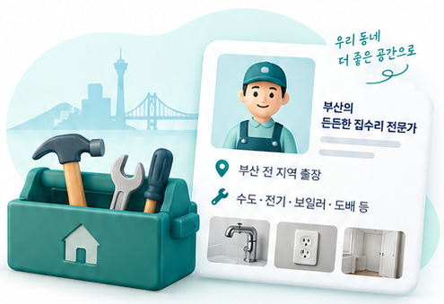

지역으로 찾기
고객이 부산의 출장 가능 지역으로 업체를 찾습니다.
전문 분야와 출장 가능 지역, 작업 사례를 알려주세요.
예스수리가 업체 소개 페이지를 정리해 드립니다.
신청서를 작성하고 명함·작업 사진은 카카오톡으로 보내주세요. 운영자가 내용을 확인한 뒤 등록합니다.

고객이 부산의 출장 가능 지역으로 업체를 찾습니다.
필요한 수리 분야와 작업 사례를 확인합니다.
공개된 업체 연락처로 전화·문자 상담합니다.
구글 신청서를 작성하고 사진은 카카오톡으로 보냅니다.
운영자가 연락처와 소개 내용을 확인합니다.
전문 분야·지역·사진을 정리합니다.
업체가 내용을 확인한 뒤 게시합니다.
사진은 직접 촬영했거나 사용 허락을 받은 자료로 준비해 주세요.
부산 ○○구 출장 가능
주요 작업과 업체 소개가 표시됩니다.
경력 · 상담 시간 · 작업 사진
실제 업체 연락처는 정보 확인 후 공개합니다.
예스수리 회원가입 없이 구글 신청서를 작성할 수 있습니다. 명함·작업 사진은 카카오톡으로 보내주세요.
업체 소개 페이지에 공개된 연락처로 고객이 직접 전화하거나 문자를 보냅니다.
예스수리 카카오톡의 정보 수정 메뉴로 변경 내용을 보내면 확인 후 수정합니다.
목록에 없는 분야도 신청할 수 있습니다. 명함이 없어도 가능합니다.
실제 출장 가능한 지역을 적고, 공개할 연락처와 사진은 게시 전에 확인합니다.